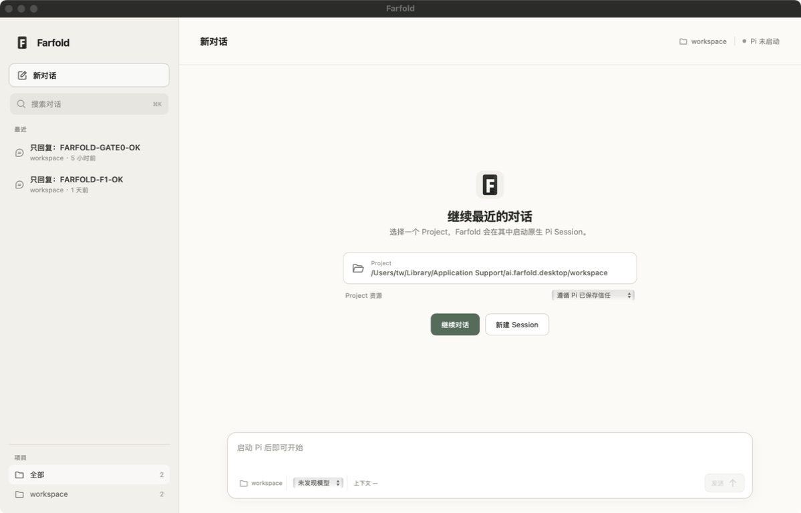
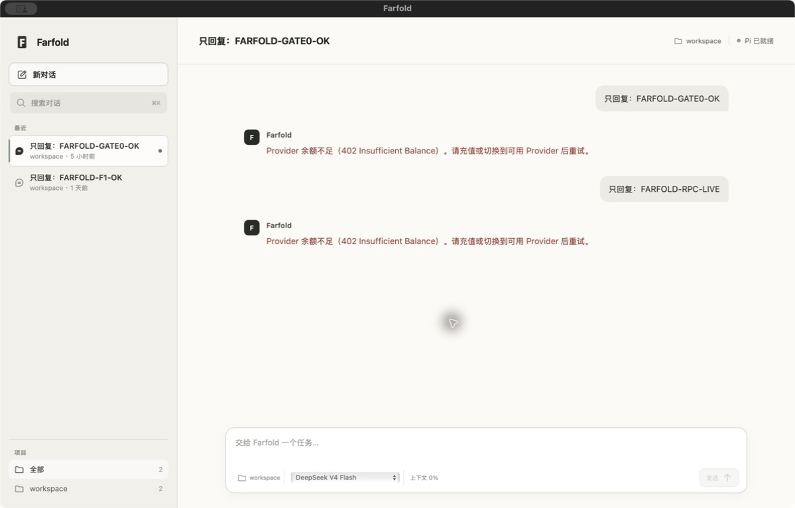

Provider 设置与恢复入口缺失
增加轻量设置面板：Provider、API
key、遮蔽状态、更新、删除；继续写入 Pi 原生
auth.json，不建立第二套 Provider Registry。
Gate 0 · Product Reality Review
当前问题不只是 DeepSeek 余额不足。Farfold 已经具备可用的 Pi 生命周期和会话投影， 但 Provider 接入、状态真实性、Skill 可发现性和工作结果呈现仍要求用户离开应用或自行猜测。
以下状态来自 /Applications/Farfold.app，没有注入模拟
Session 或伪造 Pi 事件。


共同特征是：Pi 或工程层已有能力，但 Farfold 没有提供可发现、可操作、可验证的桌面路径。
增加轻量设置面板：Provider、API
key、遮蔽状态、更新、删除；继续写入 Pi 原生
auth.json，不建立第二套 Provider Registry。
拆分 Runtime、Provider、Task 三层状态；“凭据存在”只能显示为已配置，真实请求成功后才显示可用。
按 request id 等待对应 response，再确认消息已投递、模型已切换或命令已执行；避免乐观状态与 Pi 事实分叉。
消费已经请求的 get_commands，在输入框提供简洁的
/ 建议和来源标签。
安全渲染 GFM、代码块和链接；连续工具分组并允许展开完整输出。无需建设独立 Artifact 或 Review 平台。
所有 RuntimeStatus 写入统一通过 generation guard，防止延迟的旧状态覆盖停止或重启后的新状态。
在加入秘密输入前收紧当前为 null 的 Tauri
CSP，后端原子写入并保持
0600 权限，任何日志都不得包含 key。
保留 thinking level、thinking delta、通知等级和 widget placement；优先补真实语义，不增加新的 Agent 状态机。
工作区空闲时允许直接打开其他文件夹；提高 9–10.5px 控件文字和低于 4.5:1 的弱对比文本。
这里参考的是流程逻辑，不复制视觉皮肤，也不改变 Pi 单一运行时边界。
先完成账户或 API key 接入，再选择工作位置并发送消息；账户菜单可确认认证状态和退出。
Settings → Models 中填写 Provider key，并显式 Verify；验证后才进入模型选择。
交互模式有 /login 和 /settings，但
RPC 不暴露这些 TUI 内建命令，因此宿主必须提供最小认证界面。
先补闭环，再用新 API 做正式验收；不扩张成设置平台、权限系统或第二 Agent Loop。
收紧 CSP，接入 Pi 原生凭据文件，提供配置、遮蔽、替换和删除。
拆分三层状态，建立 request-response 关联，统一 generation guard。
接通命令/Skill 发现、Markdown、代码块、链接和可展开工具结果。
再使用新的可用 API，在安装版中完成 Provider、知识任务、Project、资源、编码、停止、steering 和恢复。
Session 分叉、附件、完整文件审查和更大的设置系统继续延后。